Freshly painted outdoor wood is a beautiful thing. Too bad it doesn’t last. After five, 10 or 15 years of exposure, siding, trim and fences need a recharge - that’s just the way it is. But painting outdoor wood, especially an entire home, can be a high stakes game: Do it right and your efforts will endure two or three times longer than if you cut corners. That’s why a little extra know-how and effort is so worthwhile.
Beauty does matter, of course, and to understand the essentials behind a long-lasting outdoor paint job, you need to recognize the three forces that will work against you: sunshine, moisture and temperature fluctuations.
These are the archenemies of outdoor paint. Ultraviolet (UV) radiation breaks down surface paint layers, while seasonal expansion and contraction of underlying wood causes paint films to crack. Flaking, bubbling and peeling follows shortly behind as water sneaks in behind the paint, breaking its bond to the wood. Getting the most from an exterior paint depends on thwarting these three forces.
By the way, you may be surprised to learn that exterior paints and stains do not enhance the rot resistance of wood in any meaningful way. In fact, in some cases they can even trap moisture and promote rot. We’ve been conditioned to think otherwise in an effort to boost product sales. The fact is that exterior wood finishing is mostly about aesthetics. According to the University Extension office of Iowa State University, “The simplest and most economical way of finishing an exterior wood surface is to allow it to weather naturally. Wood exposed to the weather will undergo color changes during transition from the original to the final gray color.” For more on this, download Finishing Exterior Wood Surfaces. Got a new barn or outbuilding? Letting the surface weather naturally or painting only the trim is a viable option. Bare barns everywhere stand as testimony to the enduring qualities of unfinished exterior wood. (See photo in the Image Gallery.)
It’s often said that preparation is key to long paint life. But what exactly does this mean? Part of the confusion comes from the fact that effective prep for new wood is quite different from what is required for renewing a previously painted surface.
Are you repainting exterior wood? Take a look at “Dealing with Lead Paint” (below) before you settle on a preparation strategy. The presence of toxic lead in many older paints complicates the prep process on large jobs to the point where some folks decide to install new siding rather than repaint.
Every outdoor repainting job starts off best with a good pressure washing. If you find that some paint flakes or bubbles remain, brush them off with a heavy-duty wire wheel spinning on an angle grinder after the surface has dried. (See photo in the Image Gallery.) This regimen will probably leave some stubborn areas of old paint behind, but there’s still no better way to make an initial attack. Next, you need to make some decisions.
Although it’s not essential to remove areas of old paint that are rock solid, you must go back to bare wood in places where peeling, bubbling and cracking is visible. And where your pressure washer and wire wheel can’t make this happen, you have two main options, both of which have drawbacks. You can soften old paint chemically, then scrape it off, or soften the paint with heat and scrape. Traditional paint-softening torches pose a fire hazard and vaporize toxic lead from paint if it’s heated higher than 1,100 degrees. Standard stripping chemicals, on the other hand, are messy, expensive and toxic. So what do you do?
Safer chemical strippers are one option, and not only because they pose a substantially lower health risk than traditional formulations. Newer versions also work better because most don’t dry out. Brush them on and wait as long as necessary for softening to be complete.
Although softening paint with an open flame can fill your body with vaporized lead, there are two related approaches that won’t. Electric heat guns that operate cooler than 1,000 degrees are claimed to be safe for use with lead paint. A more effective option that operates at an even lower, safer temperature is an infrared paint stripper. This is a hand-held electric tool that uses heating elements to warm painted surfaces from a distance of several inches, softening the paint and making it easily scrapeable. The model I’ve tried - the Silent Paint Remover - works more quickly than a heat gun and performs well on curved surfaces. The infrared heating action is also effective for softening glazing putty when refurbishing traditional wooden windows.
With the bad paint gone, what have you found? If there’s rot and punky wood present, you’ll need to scrape out the soft stuff, solidify any remaining spongy areas with wood consolidator, then fill the cavities with an epoxy-based filler. Do not use auto body compound. Auto body products are too brittle for use on exterior wood; it’ll simply crack and fall out in short order.
Is any of your wood gray and weathered where paint has been flaked off for a while? That color indicates surface deterioration caused by UV rays and microbes. The cellulose is breaking down under ultraviolet attack and beginning to detach from the underlying wood. Look closely and you’ll see that weathered wood is also fuzzy. Although this kind of surface is certainly absorbent, it’s not physically strong. This means that even though finishing products can soak into old wood, the grip they gain on loose fibers isn’t sufficient. The finish layer ends up coming off quickly, along with the wood fibers underneath. Sanding is the solution. You’ll find a random orbit sander excellent for many areas. A belt sander is better for wide open, flat regions.
Prepping properly before repainting is a lot of work, but it’s essential and prudent. Just don’t make the mistake of thinking that prepping new wood is much easier than it is for old. Once you paint or stain, you’ll need to stick with some kind of finishing regime. Shabby paint is much worse looking than no paint at all. And since exterior wood finishes don’t add significant rot resistance to the material, it’s mostly about looks. For a rare, one-time wood finish option for new wood, see “One Time Only? (below).”
If you opt to go with paint or traditional wood stain, preparation will greatly extend the life of the coating. And getting rid of something called “mill glaze” is the reason why. The rapid rotation of planer knives that transforms rough lumber into smooth boards at the sawmill leaves behind a legacy of burnished fibers and heat-sealed surface resins that prevent finishing liquids from penetrating deeply enough to gain a durable foothold. Mill glaze is a universal condition on all new smooth wood and it causes more premature finish failure than anything else. Paint needs to sink into open wood pores to deliver maximum working life, and a lot of research has gone into determining exactly how to make this happen.
During a five year field study, the world’s largest coatings manufacturer, Akzo Nobel, conducted field trials across North America to determine which pre-application technique best maximized the absorbency of wood surfaces. Chemical wood wash products and mill glaze removers were compared side-by-side with pressure washing regimes using plain water and cleaning agents. The results of sanding were analyzed, too. As it turned out, surfaces prepared with a 60-grit abrasive yielded the best absorbency and longest finish life. That’s great, but who really wants to go to the trouble of sanding an entire new home?
One way to reduce the hassles of sanding new wood is to also pressure wash before painting. Gas-powered pressure washers typically deliver water at 1,500 to 3,500 psi - more than enough to eliminate mill glaze. Trouble is, this sort of hydro-pummelling also loosens surface fibers, especially with softwoods such as cedar and pine. And while fuzzy fibers are certainly thirsty enough to soak up paint, they also prematurely break off from underlying wood, letting the paint go along with it. This is where sanding comes in.
Let pressure-washed surfaces dry for two or three good days, then sand off the troublesome fuzz with a random orbit sander. It takes just a few quick passes over each board because a portion of the deglazing work was already done by water. For fastest results, use a 6-inch random orbit sander with an angle-grinder design. They’re more powerful than palm-style sanders, so you’ll cover ground faster.
Many still don’t think that today’s best exterior paints are latex, but it’s true. That’s because much more research and development has gone into advancing latex paints than oil-based formulations, especially for outdoor use. In fact, oil-based products are actually losing some of their former effectiveness as traditional formulas have been altered to boost safety and reduce environmental impact. The biggest difference has to do with adhesion and crack resistance.
In general, the best exterior latex is 100 percent acrylic. Not all latex formulations are, so read the fine print. Acrylic paint sticks better and retains the ability to expand and contract with changes in underlying wood - something oil-based paints have never been good at. Adhesion and flexibility translate into a more durable coating that looks better longer. The best source of current information on exterior latex paint performance comes from Consumer Reports. They publish annual results on comparative performance from brand to brand, and the differences are significant. The best exterior latex paints (made by California, Pratt & Lambert and Glidden) still rate excellent in appearance after nine years. The worst have deteriorated to just “good” after only three years.
When it comes to applying paint, you have several options. When using latex paint, choose brushes that have synthetic bristles. These don’t soak up water from the paint like natural bristles do, so they retain the right amount of springiness to work well. If you’re brushing paint onto large areas, use a 4-inch wide brush. A 2-inch wide trim brush is useful around windows and doors; an angled 1½-inch sash brush is ideal for working around finer details.
Rollers beat brushes hands-down for productivity over wide open areas, but only if you choose the correct length of fuzziness or “nap” for the job. Smooth surfaces like that of planed wood are best tackled using a roller with an eighth- to quarter-inch deep nap; rough wood covers better with a three-eighths to half-inch nap; rough plaster needs a three-quarter-inch to 1-inch nap.
When it comes time to apply paint to large areas, one of the least expensive, high-output methods is an electric paint sprayer. These use an oscillating internal mechanism to propel paint out of the gun tip.
High-volume, low-pressure (HVLP) sprayers offer the ability to coat all kinds of surfaces with minimal overspray. You can use them for everything from finishing homemade furniture with water-based urethane to painting the side of your house with exterior latex paint. For larger jobs, consider renting a sprayer that includes a remote paint reservoir. It saves considerable refilling time. Some are even designed to accept open cans of paint. Just open the reservoir, place an open can inside, then close the lid and start spraying.
Exterior painting is like a combination lock. You’ve got to get all the details right for the lock to open. But with the right information and a commitment to detail, you won’t need to think about painting again for a long time.
Stripping loose paint is an essential part of any effective repainting job, but there’s a potential problem, too. The old paint could contain lead. In fact, if your home is more than 30 to 40 years old, it almost certainly does, especially in the oldest layers. Even small amounts of ingested lead can cause permanent brain and organ damage. It also reduces intelligence and causes behavioral problems in children. Test kits can tell you for sure if the paint you have contains lead - just be certain to analyze each layer. If you do detect lead, here are some safe stripping precautions:
Painting is one thing, but finishing wood so the beauty of grain patterns show through involves different products, techniques and maintenance schedules. If you want opaque colors and are willing to refinish diligently, then paint is for you. But tired stain looks better than tired paint. If you’re planning to be lazy, then staining, which requires less prep work than for film-forming finishes, is your best bet.
As you assess wood-grain friendly finishing options, pay attention. None of the terms used to describe non-paint, outdoor wood finishes are standardized, so you need to read between the lines to see what you’re really getting.
If your wood is new, and you’d like the most refined appearance possible, then a tinted, transparent film-forming finish is worth a look. Think of it like colored varnish. It forms a surface coating while adding color that lets wood grain show through prominently. Just be careful. You’ll definitely need to start by removing mill glaze for best results. Film-forming products will peel otherwise. The best formulations require renewal every 18 to 36 months on decks, less often on vertical surfaces.
Soak-in stains (often called “semi-transparent” stains) are different. They’re well-suited to older wood surfaces where some weathering and cracking has begun to set in. Stains like these impart color to the surface (hiding gray color pretty well), but form no surface film that could peel in time. Most soak-ins offer a 12- to 48-month lifespan under real-world conditions.
Clear, water-repellent finishes help retain the look of new wood without imparting much color of their own. They also need to be reapplied every 12 months. Maintenance usually involves the use of a wood brightener to restore a light, new-wood color before recoating.
Five years ago I discovered an exterior wood-finishing product that made me shake my head in disbelief. Lifetime Wood Treatment claimed the same ridiculous thing that its name implies. Put this stuff on once, and the finish remains forever. Really? How can it be?
Since 2002, I’ve applied about five gallons of Lifetime on various projects around my homestead. And after watching the results closely, I like the product a lot.
Lifetime Wood Treatment [(250) 538-5516] comes as a powder. You mix it with water, then apply it with a brush, roller, sprayer or by dipping. The main thing to understand about Lifetime is that it neither forms surface film nor adds any color to the wood directly. Instead, the tea-colored solution causes the wood surface to turn an olive gray by chemical reaction. You’ll first notice the darkening action within minutes of application, continuing for a day or so until the wood looks like it’s been sitting outside for several years. But unlike ordinary weathering, the appearance created by Lifetime is only as even as your application job. The look is too casual for some folks, but just right for people who don’t like to paint and repaint. As long as every part of the surface has been made wet, the gray color is nice and even in appearance. I use a pump-up weed sprayer to speed application (this sprayer is never used for anything else), but take care. Some herblike components of the powder don’t dissolve, and they’ll clog up your sprayer nozzle pretty quickly if you don’t filter the liquid through a cloth as you fill the sprayer.
The product is based on a family recipe in use for more than 60 years, and it’s supposed to act as a wood preservative. Five years experience isn’t enough to tell, so it’s probably best that you always build outdoors with rot-resistant wood, following a project design that minimizes areas of wood-to-wood contact that can trap moisture and promote rot.
|
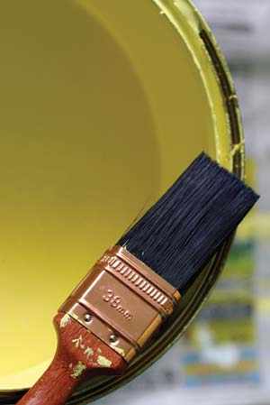 ISTOCKPHOTO/NICOLETTE NEISH For best exterior painting results, use acrylic latex paint and synthetic bristle brushes. |
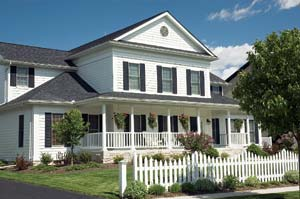 ISTOCKPHOTO/MICHAEL SHAKE A well painted house adds value to any neighborhood. |
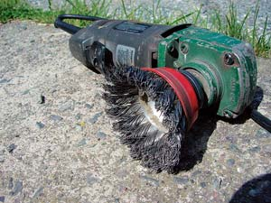 STEVE MAXWELL You can use a wire wheel attached to an angle grinder to remove loose paint. |
|
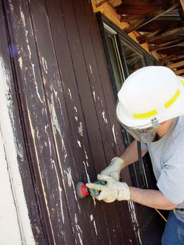 STEVE MAXWELL You can use a wire wheel attached to an angle grinder to remove loose paint. |
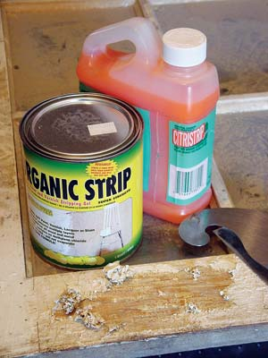 STEVE MAXWELL Use chemical paint strippers to soften old paint, then remove it with a scraper. Keep a dropcloth on the ground to prevent paint from getting into the soil. Dispose of latex paint scrapings in the trash. Lead paint requires disposal as toxic waste. |
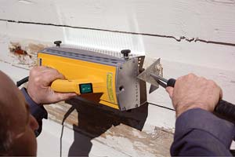 STEVE MAXWELL Use infrared paint strippers to soften old paint, then remove it with a scraper. Keep a dropcloth on the ground to prevent paint from getting into the soil. Dispose of latex paint scrapings in the trash. Lead paint requires disposal as toxic waste. |
|
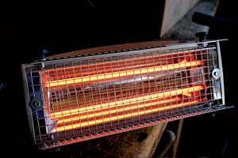 STEVE MAXWELL Use infrared paint strippers to soften old paint, then remove it with a scraper. Keep a dropcloth on the ground to prevent paint from getting into the soil. Dispose of latex paint scrapings in the trash. Lead paint requires disposal as toxic waste. |
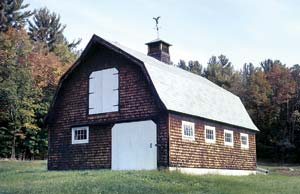 FOTOSEARCH/IMS COMMUNICATIONS For less work, why not leave wood siding unpainted, allowing it to age naturally to a soft gray? Add a little white trim and your low-maintenance barn or home will look terrific.
|
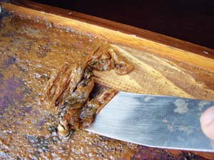 STEVE MAXWELL Dispose of lead paint scrapings as toxic waste. |
|
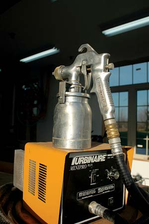 STEVE MAXWELL A high-volume, low-pressure sprayer will make painting your house easier and quicker. |
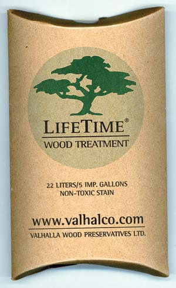 WWW.VALHALCO.COM Lifetime Wood Treatment comes as a powder. You mix it with water and then apply. www.valhalco.com |
|